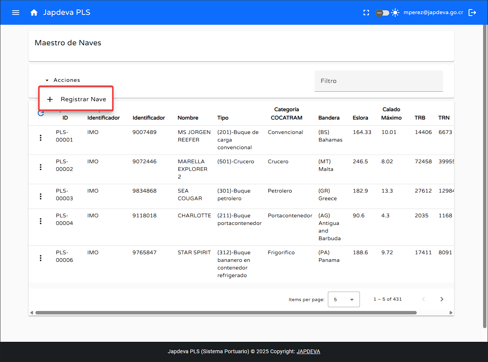
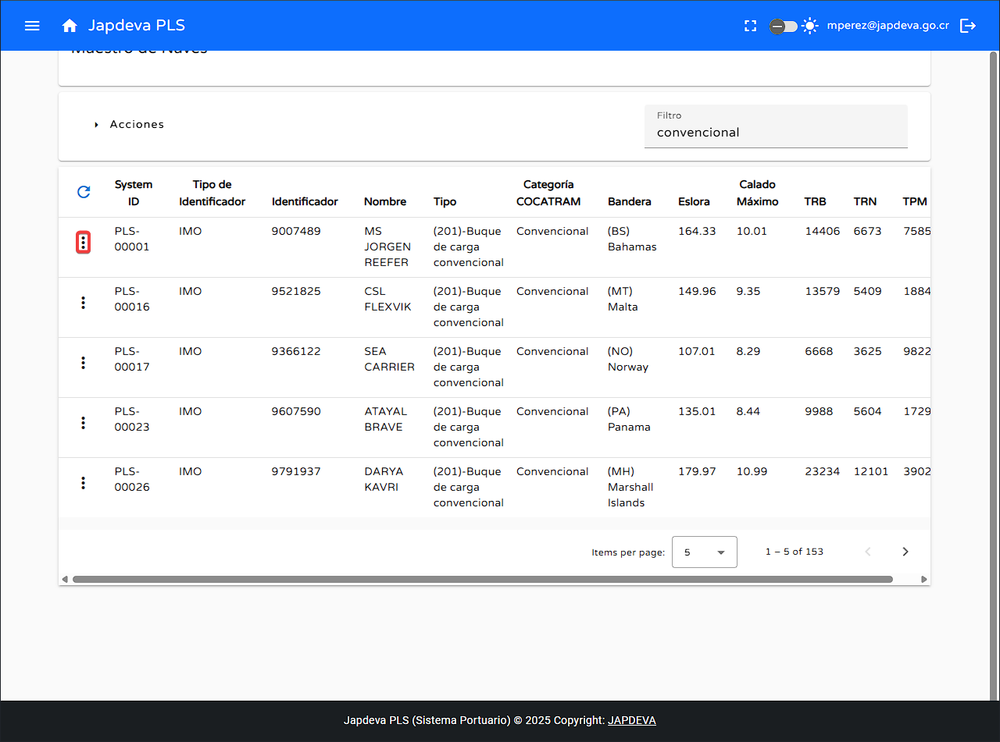

2. Funciones principales
1
Registrar nave
Para lograr registrar de manera correcta una nueva nave se deben de seguir los siguientes pasos:
- Nos dirigimos a la parte superior izquierda sobre el botón de acciones y damos clic sobre el mismo.
- Al darle clic sobre el botón se desplegara una ventana emergente con la opción Registrar Nave. 
- Al dar clic sobre la opción anterior se desplegará una ventana de edición donde se podrá realizar la inserción de los datgos necesarios para la creación de una nueva nave.
- Teniendo claro la clase de datos qe se requiere para la creación de una nueva nave comencemos con la guía de inserción.
- Nombre: El primer campo que encontraremos en este apartado será la inserción del nombre de la nave. (Registrado a nivel internacional).
- Tipo de identificación: Seguidamente encontraremos la selección del tipo de identificación de la nave, donde se debe seleccionar uno de los diversos tipos existentes en el sistema.
- Identificación: Inserción de la debida identificación de la nave, además de que debe de adaptarse a la tipología seleccionada en el punto anterior.
- Tipo de buque: En este apartado es necesario seleccionar una de las diversas clases registradas en el sistema siempre y cuando la nave cumpla con esta clase.
- Bandera: /Se debe de seleccionar la bandera correspondiente al país de origen de la nave.
- Calado máximo: El calado debe ser proyectado en metros y brindarse siempre lo máximo que ofrece el buque.
- Eslora: La eslora debe ser proyectada en metros y brindarse siempre lo máximo que ofrece el buque.
- TRB: El tonelaje registro bruto debe ser el máximo que posee el buque en kilos.
- TPN: El tonelaje peso neto deber ser el máximo que posee el buque en kilos.
- TPM: El tonelaje de peso muerto debe ser el más exacto posible.
- Una vez completados todos los campos se puede dar clic en el botón Guardar
- En caso que se desee cancelar el proceso se puede dar clic en el botón Cancelar
Creación de una nueva nave
2
Función búsqueda por filtro
Para realizar la función búsqueda mediante filtro realizamos lo siguiente:
- Nos posicionamos dentro del espacio en blanco de filtro.
- Al estar dentro del espacio en blanco lo rellenamos con los datos deseados para realizar la búsqueda en la tabla proyectada en el sistema.

3
Función refrescar información
Para lograr refrescar la información en tiempo real con la más reciente información registrada en la base de datos realizamos lo siguiente:
- Ubicamos nuestro cursor sobre el botón de refrescar y presionamos sobre él.
- Al momento de dar clic sobre el botón se realizará un refresco de información en pantalla por la más reciente ingresada en el sistema.
4
Función visualizar información de buque ya registrado
Para visualizar la información almacenada de un buque ya registrado se debe hacer lo siguiente:
- Ubicamos el cursor sobre el botón de Opçiones que está ubicado en la parte izquierda de la tabla proyectada en pantalla. 
- Al darle clic a este se mostrarán dos opciones Información de buque y Editar.
- Al dar clic en información de buque se verá el Ship Particular que se encuentra registrado en el sistema en relación al buque seleccionado.
5
Función editar buque ya registrado
Para editar un buque ya registrado es necesario realizar lo siguiente:
- Al darle clic en la opción Editar se proyectará una ventana donde se podra editar todos los datos relacionados al buque seleccionado.
6
Visualización de información en pantalla Maestro de Naves
Para tener una vista más generalizada y comprensible de la información proyectada en la tabla presente en la pantalla se explicarán de izquierda a derecha de los datos en cuestión.
- System ID: Identificador único asignado por el sistema al momento de registrar el buque.
- Tipo de identificador: Clase de identificación que posee el buque, por ejemplo: IMO, MMSI entre otros.
- Identificador: Número de identificación que posee el buque en relación al punto anterior.
- Nombre: Nombre con el cual la embarcación fue bautizada.
- Tipo: Tipo de buque que es el navio registrado en el sistema, por ejemplo: Crucero, Buque de carga entre otros.
- Categoría COCATRAM: Categoría de la embarcación en relación a las diversas clases de embarcaciones que posee COCATRAM.
- Bandera: Bandera reflejada en siglas del país de origen de la embarcación, por ejemplo PA o CR.
- Eslora: Extensión de la embarcación en metros.
- Calado máximo: Calado máximo de la embarcación en metros.
- TRB: Tonelaje registro bruto de la embarcación en kilos.
- TRN: Tonelaje peso neto de la embarcación en kilos. PREGUNTAR
- TPM: Tonelaje de peso muerto de la embarcación en kilos.